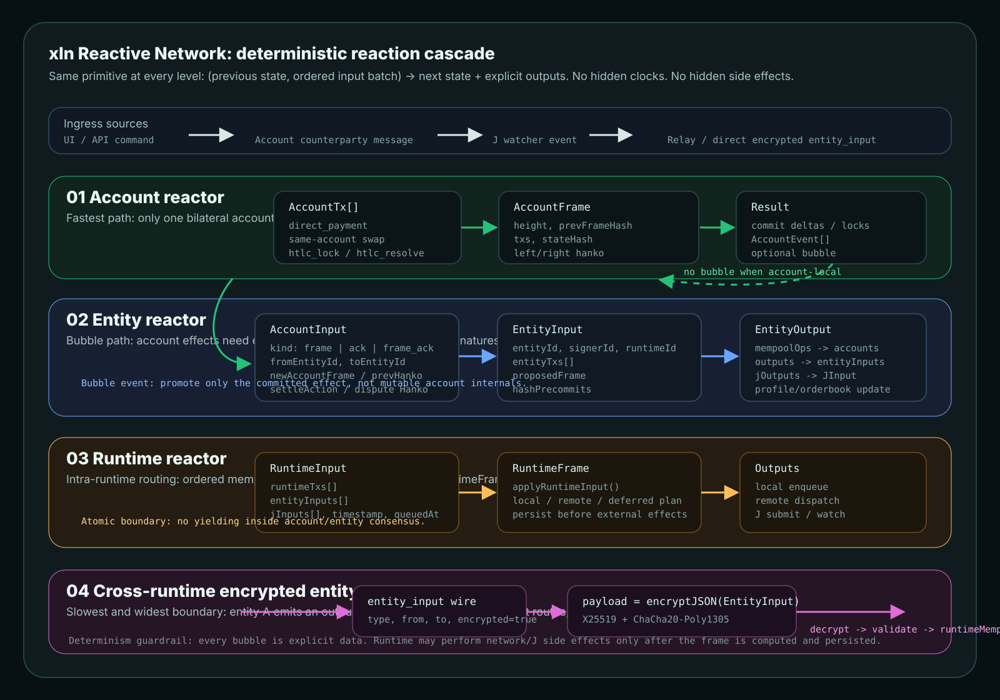

Account-local
A swap, payment, lock, resolve, or credit-limit update changes one bilateral account. No entity book, no runtime route, no network send.
xln is a stack of deterministic reactors. A command reacts at the narrowest layer that can handle it. Only committed effects bubble to the next layer, and cross-runtime messages stay encrypted until the target runtime decrypts and validates them.
(prevState, orderedInputBatch, env.timestamp) -> nextState + explicitOutputs

A swap, payment, lock, resolve, or credit-limit update changes one bilateral account. No entity book, no runtime route, no network send.
A committed account effect needs entity-owned state: orderbooks, account queues, profile data, BFT frame signatures, or J batches.
Runtime drains queued runtime, entity, and J inputs into one atomic frame, then plans local outputs, remote outputs, and persistence.
Entity-to-entity traffic crosses a runtime boundary as encrypted
entity_input; relay/direct transport is a blind pipe.
| Layer | When it fires | Input payload | State touched | Outputs | Determinism guard |
|---|---|---|---|---|---|
| Account | One bilateral account can settle the command by itself. | AccountTx[] inside AccountFrame; message shape is AccountInput.kind. |
Account deltas, locks, pulls, swaps, frame hash chain, pending frame. | Committed account state, optional AccountEvent, optional bubble trigger. |
Frame hash, hanko signatures, one pending frame, replay from tx list. |
| Entity | Account effects need entity books, account queues, BFT consensus, or J output. | EntityInput { entityId, signerId, runtimeId?, entityTxs?, proposedFrame?, hashPrecommits? } |
Entity accounts map, proposals, orderbooks, reserves, profile, J batch state. | mempoolOps to accounts, outputs to entities, jOutputs to jurisdiction. |
Signer is part of the route; no late proposer guessing for tx-bearing output. |
| Runtime | Inputs must be ordered, merged, routed, persisted, or delivered across replicas. | RuntimeInput { runtimeTxs, entityInputs, jInputs?, timestamp?, queuedAt? } |
Runtime mempool, replicas, J replicas, network inbox, output plan, WAL/storage. | Local enqueue, remote encrypted dispatch, J submit/watch, stored runtime frame. | Runtime frame is atomic. Side effects happen after frame computation/persistence. |
| Cross-runtime | Target entity signer is not local to this runtime. | entity_input wire message with encrypted DeliverableEntityInput. |
No consensus state in relay; target runtime decrypts and enqueues after validation. | Remote runtimeMempool.entityInputs, or fail-fast transport error. |
X25519 + ChaCha20-Poly1305 payload; relay cannot forge txs or read payload. |
type RuntimeInput = {
runtimeTxs: RuntimeTx[];
entityInputs: EntityInput[];
jInputs?: JInput[];
timestamp?: number;
queuedAt?: number;
};type EntityInput = {
entityId: string;
signerId: string;
runtimeId?: string;
from?: string;
entityTxs?: EntityTx[];
proposedFrame?: ProposedEntityFrame;
hashPrecommits?: Map<string, string[]>;
};type AccountInput =
| { kind: "frame"; newAccountFrame; newHanko }
| { kind: "ack"; prevHanko }
| { kind: "frame_ack"; prevHanko; newAccountFrame; newHanko }
| { kind: "dispute"; newDisputeHanko; newDisputeHash }
| { kind: "settle"; settleAction; newSettlementHanko? };type CrossRuntimeWire = {
type: "entity_input";
from: sourceRuntimeId;
to: targetRuntimeId;
encrypted: true;
fromEncryptionPubKey: hex;
payload: encryptJSON(DeliverableEntityInput);
};A user, matcher, or HTLC handler produces an AccountTx for one bilateral account.
The account reactor hashes and signs a frame. If state remains local, the cascade stops here.
Committed effects that need entity state become mempoolOps, entity txs, or account followups.
The entity reactor updates books/accounts/profile/J batches and emits explicit entity or J outputs.
The runtime keeps local outputs in-process and encrypts remote entity outputs for the target runtime.
Do not promote account-local work into entity/runtime paths unless the committed effect needs shared entity state or transport.
An upper layer receives explicit payloads: account events, mempool ops, entity inputs, or J inputs. It must not reach into lower-layer internals.
Runtime frames remain atomic. Network sends, relay delivery, J submits, and profile announcements occur only after deterministic state transition work.